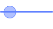
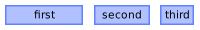

NEWS
DRAFT Awesome window manager framework version 4.4 changes DRAFT
This is work in progress and describes the current state.
Some general text about Awesome v4.4 should be here. Hopefully someone will notice that it is not yet here before we release…
This document was last updated at commit v4.3-197-g9085ed631.
New features
- mousegrabber can now take
nilas a cursor to not change the cursor at all. awful.screennow has arequest::wallpaperand arequest::desktop_decorationsignal. They make some workflow implementation cleaner.- Lua code can interact with the selection contents via the new
selection.acquire,selection.getter, andselection.watcherobjects - Pending delayed calls (gears.timer.delayed_call) can be dispatched via
gears.timer.run_delayed_calls_now() - naughty was rewritten TODO TODO say more about this TODO TODO
- The
rulesargument in awful.spawn.once and.single_instanceis now optional - The wibox.container.background now has a
border_strategyproperty to define how the content is resized when a border is present. - The wibox.container.margin now allows tables in the
marginsproperty. - The declarative widget syntax now allows to directly use functions instead of
{widget = myfunction}. - The awful.widget.tasklist now resizes the client icons properly.
- The awful.widget.tasklist and awful.widget.taglist will now set the client and tag properly respectively on each widget of the template automatically. This reduces the amount of boilerplate code.
Noteworthy fixes
$SOURCE_DATE_EPOCHis honored in more places when generating the documentation- Fix setting shapes via awful.rules
- Set
_NET_WM_DESKTOPfor sticky windows correctly - Under complicated circumstances, AwesomeWM could have run Lua code while having the X11 server grabbed. This had the potential to cause deadlocks with Lua code using io.popen. Usage of io.popen is still strongly discouraged.
wibox{ input_passthrough = true }now works correctly. Previously, the property could only be set on already-constructed wiboxes.- Remove unused first parameter from multiple widget constructors: wibox.container.place, * wibox.container.radialprogressbar, wibox.layout.stack, wibox.widget.slider.
- Renamed some properties like wibox.widget.textbox.align to wibox.widget.textbox.halign for consistency reasons.
Behavior changes
- wibox.container.background applies shapes differently. The new approach should be more consistent with a border.
- The
shape_clipoption of wibox.container.background was removed. The code now always behaves as if this option is set totrue. The old behaviour can be simulated with wibox.layout.stack. - Awesome now initialises Lua’s random number generator from a good source
naughty.dbusnow uses Gio for talking to DBus. This is a first step in the deprecation of Awesome’s own DBus bindings and could lead to behaviour changes on DBus.- The client
keysandbuttonsproperty now return awful.key andawful.buttonsobjects rather than the lower levelkeyandbuttonobjects. If you used these low level APIs to add keys and buttons dynamically, please migrate your code to the corresponding:append_and:remove_client methods. beautiful.border_widthandbeautiful.border_colorare now honored even when the part related to borders is removed from rc.lua. Set them appropriately in your theme or disconnect the defaultrequest::borderhandler.- The order by which the client rules compute the geometry have changed slightly. The border is now applied before the titlebar offset. This should not affect most users unless you had mitigated the bug it fixes by adding the titlebar offset in your rules.
- Setting
awful.rules.rulesnow append the rules to the existing set. Clearing the rules was never officially supported. If you really want the old behavior, useawful.rules.rules = {}; awful.rules.rules = my_new_rules. client:relative_move()now defaultnilvalues to zero. The previous behavior made no sense.- The tasklist and taglist widgets are no longer directly an instance of
it’s main layout. Use the
base_layoutproperty to access the layout. This allows to replace the layout at runtime. The previous behavior was undocumented. - Pango 1.44 is now the oldest recommended Pango version. Older versions are still supported, but will lack the ability to use some textbox properties, mainly wibox.widget.textbox.line_spacing_factor.
- The wibox.layout.grid layout
expand,spacingandhomogeneousproperty getters now return a table instead of a number. The table contains ahorizontaland averticalkey.
Awesome window manager framework version 4.3 changes
Awesome v4.3 is the third release of the 4.x API. It comes after one and a half years of little fixes and improvements. Awesome v4.2 was very stable thanks to everybody’s effort to unit test everything. Given no major bug warranted a new release, this one adds a few large features while preserving full compatibility with existing user configurations.
New features
- gears.string now has a
endswithandstartswithfunctions luarocksmodules are now automatically available in Awesome- A generic way to create or use widgets has been added (wibox.widget.base.make_widget_from_value)
- It is now possible to connect to signals from all instances of a widget at once
- The calendar widget now supports margins
- The documentation has a new theme
- Wiboxes now have
to_widget()andsave_to_svg()methods. - The client objects now have a
immobilized_horizontalandimmobilized_verticalproperty to know if they can currently be moved or resized (for example, it is set to false when maximized) - gears.timer objects now have a
call_nowmethod. - The hotkey popup now supports
termitekeybindings - The menubar loads faster
- Wiboxes have an
input_passthroughproperty to send mouse clicks to the object below. - The
taglistandtasklistnow support the declarative constructor syntax - There is now an awesome.pixbuf_to_surface to convert a
GdkPixbufto a cairo surface. - The notifications icon can now be resized and limited with
notification\_icon_\size - A gears.sort module has been added with graph resolution
awesome-clientnow runs code in a protected context- The widget documentation has been extended to be more friendly to new users.
- There is a new
beautiful.maximized_hide_bordertheme option to hide the border for maximized clients. - The client
startup_idfield is now writable. This is useful when the client native implementation is not present or too buggy to be used. - The awful.widget.prompt now has a
with_shelloption to allow Bash/ZSH aliases, function and environment variables to be used in commands. - The awful.titlebars now have a
fallback_namewhen a client has nonameproperty. - Clients now have a
motif_wm_hintsproperty to reflect some hints using the Motif X11 property extension. This is used by some modern toolkits including GTK. - Clients now have a
requests_no_titlebarproperty to expose when a client has client side titlebars (also known as decorations and CSD) - The hotkey popup now has a
show_awesome_keysoption. - The awful.widget.prompt now has more of the awful.prompt constructor arguments.
- It is now possible to set a list of layouts per tag instead of a single global one.
- There is now a
awful.layout.get_tag_layout_index()function to get the index of the current layout in the global layout list (awful.layout.layouts) - The wibox.layout.manual layout now has an
:insert()method.
Better DPI handling
The screen now has a read/write dpi property and awful.screen.set_auto_dpi_enabled(true)
can be used to automatically set the DPI for many Awesome elements. Please
note that it is not backward compatible and breaks many widget. As AwesomeWM
always used pixels as the de-facto metric for sizes, enabling auto_dpi will
break most existing configs. However, for people who use such setup, it might be
worth speding some time to fix their config.
Extendable awful.rules providers and better awful.spawn functions
There is two new functions called awful.rules.add_rule_source and
awful.rules.remove_rule_source. They allow to create a dependency graph
for where a rule comes from and which provider has the priority when setting it.
Previously, there were the normal properties,
awful.rules.high_priority_properties and awful.rules.delayed_properties.
This didn’t scale and could not represent all corner cases. Those table still
exist and are still honored, but there is now a system that can handle the full
complexity of the property priority graph.
This is used by default in awful.spawn. The reliability of attaching
properties to spawn calls has been improved. On top of this, three new
functions were added
They allow to specify that a command should only have one running instance. This works across restart too, so all hacks to handle restarting Awesome are no longer required.
Note that the client.startup_id isn’t supported by all applications and a Linux-specific workaround is recommended to improve the reliability of the awful.spawn functions.
A brand new keygrabber API
The keygrabber module API was rebuilt from scratch to make it more usable.
The previous API was very low level, very close to how it actually work, but
was disconnected from how keygrabbers are used in a window manager. Getting
anything done with the previous API required a lot of boilerplate code and had
many corner cases to handle. The new API has built-in support for the most
common use cases and is fully declarative.
A new GTK color palette based theme
A new theme has been added. It reads the GTK theme colors and use them in the
wibar, menu and titlebar. It helps create an uniform look and feel
between the window manager and client applications with minimal efforts.
Widgets improvements
The following widgets have been added:
| Name | Example |
|---|---|
| wibox.widget.separator |
It is now possible to set spacing widgets for all layouts:

The awful.widget.taglist and awful.widget.tasklist now support creating custom widgets for each elements:
A new popup widget allows to bypass most of the boilerplate code and easily
display widgets on the screen:
The awful.widget.layoutlist allows to easily display and select the client layout from a widget:
Noteworthy fixes
- There is no longer an error when a tag defined by name in awful.rules is not found.
- The menubar is now generally more robust thanks to a variety of improvements
- Many dead links in the documentation have been fixed
- The
textclockis now generally more robust with formatting issues, timezones and declarative constructors. - The last screen is never removed. Previously, some laptops removed all screens during suspend, causing all clients to go to the first tag or getting lost completely.
- The new default rc.lua uses
request::activateto set the focus. This fixes many corner case such as unfocusable clients getting the focus. - Calling awful.spawn with a set of properties is now more reliable.
- awful.key.execute is now much more reliable.
Behavior changes
- Previously, when accessing a screen by RandR output name caused a Lua error
when no output with the given name exists. This was changed to now return
nilinstead. This could break code that uses pcall to check if a screen exists. This code now needs to be changed to check for anilreturn instead. In practice it is unlikely anyone will notice the difference. - In the previous release, unfocusable clients might also not be raised. It was decided that this is a bug and the default behavior was changed.
Awesome window manager framework version 4.2 changes
Awesome v4.2 is the second release of the 4.x API. It mostly fixes the bugs reported over the last 3 months and adds a couple widgets. Almost 150 issues have been resolved or decided to be obsolete.
Noteworthy fixes
- The annoying maximization regression from v4.1 has been fixed
- Fixes broken drag&drop with some applications like FlowBlade
- Changing the keyboard layout using
xmodmapis now much faster - Fixes a regression that prevents Awesome to start when the wallpaper is invalid
- The client history is now more reliable
- Another instance where clients ended up in the wrong screen has been fixed
- Awesome will no longer generate zombie processes when restarted
- All official themes now support HiDPI screens
- The
magnifierlayout has been fixed - The menubar has been fixed for Lua 5.1 users
New features
- The hotkey popup has been extended to support Firefox, Qutebrowser and TMUX
- Naughty (the notification system) has a new
ignore_suspendflag - The
textclockwidget now supports timezones - New utility functions have been added:
- New widget functions (moved out of the
gearsmodule): - Maximization requests from clients can now be intercepted using a
request::geometrysignal handler. - A new wibox.layout.manual layout has been added (see below)
- Two new
calendarwidgets have been added, a widget and a popup (see below) - The
ratiolayout now supports various strategies to redistribute space - The
stacklayout now supports offsets - The notifications now have a
naughty.destroy_all_notifications()function - The
xresourcestheme now supports the titlebarhoverandpressstates
The stack layout offsets:
The ratio layout new full strategies:
The manual layout fixes a capability gap where hierarchical elements need to be
placed manually. It has multiple modes including an awful.placement integration.
The new calendar widgets are very flexible and can be themed down to the very small details:
Behavior changes
- The client
property::floatingis now also emitted when the floating state changes implicitly, e.g. because the client gets maximized or fullscreened. - Building Awesome from its root source directory is no longer supported and will print an error.
Awesome window manager framework version 4.1 changes
Awesome v4.1 is the first stable release for the Awesome 4.0 API. It adds non-breaking new features and fixes bugs. The main purpose of the release is to provide stability while also adding features submitted by our contributors. This release contains about 350 commits by 35 contributors, including many new developers. Thanks a lot.
New features
The shape API has been extended to both client, notifications and wibox.
The prompt now supports syntax highlight and more advanced key hooks.
The prompt widget gained many new themes variables.
There is a new 2D grid layout with rowspan and colspan support.
There is a new awful.widget.only_on_screen container to make it easier to share wiboxes across multiple screens.
Various documentation improvements. Thanks for the feedbacks.
The awful.widget.taglist now has volatile theme variables.
There is now extra environment variables such as AWESOME_ICON_PATH and
AWESOME_THEMES_PATH for those who prefer not installing Awesome.
Dynamic “C” Lua libraries are now detected like pure Lua ones.
gears.timer gained many new constructor arguments to make it easier to use.
Input shape mask are now supported. It is possible to create a wibox with passthough inputs.
There is a new awful.widget.clienticon widget capable of fetching icons of different sizes.
New theme variables
This release adds a ton of new theme variables to make Awesome prettier. We also thank all users who submitted screenshot.
theme.arcchart_thickness theme.enable_spawn_cursor theme.fullscreen_hide_border theme.hotkeys_bg theme.hotkeys_border_colo theme.hotkeys_border_width theme.hotkeys_description_font theme.hotkeys_fg theme.hotkeys_font theme.hotkeys_group_margin theme.hotkeys_label_bg theme.hotkeys_label_fg theme.hotkeys_modifiers_fg theme.hotkeys_shape theme.maximized_honor_padding theme.notification_bg theme.notification_border_color theme.notification_border_width theme.notification_fg theme.notification_font theme.notification_height theme.notification_margin theme.notification_opacity theme.notification_shape theme.notification_width theme.prompt_bg_cursor theme.prompt_bg theme.prompt_fg_cursor theme.prompt_fg theme.prompt_font theme.taglist_bg_volatile theme.taglist_fg_volatile theme.taglist_shape_border_color_volatile theme.taglist_shape_border_width_volatile theme.taglist_shape_volatile theme.taglist_spacing theme.tasklist_disable_icon theme.tasklist_disable_task_name theme.titlebar_close_button_focus_hover theme.titlebar_close_button_focus_press theme.titlebar_close_button_normal_hover theme.titlebar_close_button_normal_press theme.titlebar_floating_button_focus_active_hover theme.titlebar_floating_button_focus_active_press theme.titlebar_floating_button_focus_inactive_hover theme.titlebar_floating_button_focus_inactive_press theme.titlebar_floating_button_normal_active_hover theme.titlebar_floating_button_normal_active_press theme.titlebar_floating_button_normal_inactive_hover theme.titlebar_floating_button_normal_inactive_press theme.titlebar_maximized_button_focus_active_hover theme.titlebar_maximized_button_focus_active_press theme.titlebar_maximized_button_focus_inactive_hover theme.titlebar_maximized_button_focus_inactive_press theme.titlebar_maximized_button_normal_active_hover theme.titlebar_maximized_button_normal_active_press theme.titlebar_maximized_button_normal_inactive_hover theme.titlebar_maximized_button_normal_inactive_press theme.titlebar_minimize_button_focus_hover theme.titlebar_minimize_button_focus_press theme.titlebar_minimize_button_normal_hover theme.titlebar_minimize_button_normal_press theme.titlebar_ontop_button_focus_active_hover theme.titlebar_ontop_button_focus_active_press theme.titlebar_ontop_button_focus_inactive_hover theme.titlebar_ontop_button_focus_inactive_press theme.titlebar_ontop_button_normal_active_hover theme.titlebar_ontop_button_normal_active_press theme.titlebar_ontop_button_normal_inactive_hover theme.titlebar_ontop_button_normal_inactive_press theme.titlebar_sticky_button_focus_active_hover theme.titlebar_sticky_button_focus_active_press theme.titlebar_sticky_button_focus_inactive_hover theme.titlebar_sticky_button_focus_inactive_press theme.titlebar_sticky_button_normal_active_hover theme.titlebar_sticky_button_normal_active_press theme.titlebar_sticky_button_normal_inactive_hover theme.titlebar_sticky_button_normal_inactive_press theme.wibar_bgimage theme.wibar_bg theme.wibar_border_color theme.wibar_border_width theme.wibar_cursor theme.wibar_fg theme.wibar_height theme.wibar_ontop theme.wibar_opacity theme.wibar_shape theme.wibar_stretch theme.wibar_type theme.wibar_width
Noteworthy fixes
- Some applications such as VLC and Terminator had large unpainted areas
- The magnifier layout has been fixed
- Un-maximization misbehaved
- Docking area is now per-tag again
- CMake missing dependencies detection is fixed
- Support for FreeBSD and OpenBSD have been restored.
- Dialog and transient window can be moved to other screens again
- The fallback mode (when Awesome fails to load rc.lua) is now more robust
Behavior changes
This is a stable release and we tried to minimize any upgrade impact. However various bugfixes induced minor, not noticeable, changes:
- HiDPI support fix changed the default theme “taglist square”. This is only true if the original theme file is used (not a copy).
- Maximization now honor the screen padding. There is an option to restore the previous behavior.
- Un-maximized clients are now restored to their current screen instead of the screen where they were maximized.
- Hotkey popup no longer enable the Vim module by default due to user complaints
awful.util has been split into multiple modules in the gears library to
reduce the dependency graph. This allows for better unit testing. awful.util
will be deprecated in Awesome v5. For now, it is still safe to use it. However,
new code should use the functions from gears instead of awful.util.
Other
- The minimal LGI version is now 0.8.0. It was found that Awesome 4.0 also had an issue in the menubar module when used with 0.7.3.
- GTK+3 is now required to run the integration tests.
Awesome window manager framework version 4.0 changes
Awesome 4.0 is the first release of the v4 API level, breaking the proven v3.5 API level after 4 years. This requires to port the existing user configuration and extensions to the new API.
This document offers an overview of the new features and required changes for existing users.
New features
Input
Mouse move and resize handlers
The code used to resize and move clients has been refactored to allow plugins to be attached. This includes:
- display the client geometry in the wibar
- implement a resize grid
- implement delayed resizing (like Windows 3.11 and TWM)
- have touch-friendly resize handles (implemented by the Collision extension)
- allow window snapping (implemented)
- allow edge tiling (like Windows 7+ (AeroSnap) , KDE and Gnome) (implemented)
- move to the next tag when dragged to the edge (like KDE3) (disabled by default)
See:
.
Edge tiling (AeroSnap)
Clients are now resized when dragged to the screen edge similar to other window
managers. The width of the border can be controlled by the
beautiful.snap_border_width theme variable. The edge shape with
beautiful.snap_shape (see gears.shape) and can be disabled by setting
awful.mouse.snap.edge_enabled = false
Edge snapping
While this was already supported, this feature has been extensively extended. It can be disabled by setting
awful.mouse.snap.client_enabled = false
Hotkey popup
It is now possible to display the list of active keyboard shortcuts by pressing
mod4 + s (hotkeys_popup.show_help).
See:
- awful.hotkeys_popup
awful.hotkeys_popup.keysawful.hotkeys_popup.keys.vim- awful.hotkeys_popup.widget
New tag and layout properties

Generic useless gap
Adds an empty space between clients.
See:
Master fill policies
Allows the layout to optionally take all the space when there is no “slave”
client or to use a smaller screen area. For example, if only one terminal is
present in a awful.layout.suit.tile.left layout, then instead of filling the
whole screen, it wont be larger than it would otherwise be if there were more
clients.
See:
Volatile
Tags can now be volatile. A volatile tag will be destroyed when its last
client has been untagged. This is useful for temporary layouts or tags
dedicated to a single client.
See:
The corner layout
A new client layout with a larger master client and both a vertical and an horizontal row of slave clients.
New client properties
- client.focusable is now read/write (compared to read only in the previous versions)
- client.valid tells if the client still really exist or if the object is waiting to be deleted
- client.floating is now a client property
- client.x / client.y / client.width / client.height are client.geometry aliases
- client.first_tag is a convenience wrapper for
c:tags()[1]
Client signaling
There is now an awesome.unix_signal signal table with all platform specific
signals and their indices. There is also an awesome.kill() function to send
signals to clients. This can be used, among other thing, to pause and resume
clients.
New client rules (awful.rules)
All of the new client properties can be used in rules. In addition, the following ones have been added:
placement: use the awful.placement method (or combinations) to place the client. While older version of Awesome allowed to use callbacks here, it didn’t support all corner cases such as titlebar offsets and border_width.titlebars_enabled: older versions of Awesome had a global variable to enable or disable titlebars. This is now delegated to the rules.new_tag: allows to create a tag for the client instead of using an existing one.- The tag property has been expanded to also find tags from their name.
- The
tagsproperty now tries to merge the current tags into the array to fix some other properties. - All geometry properties are now executed at once to avoid side effects.
- The
focusis now going through the focus filters instead of being applied as-is (see the focus filter section).
User rules
It is now possible to register new rules by adding them to some awful.rules arrays. This can be used by modules to add extra functionalities or to avoid boilerplate code in callbacks.
awful.rules.high_priority_properties: before most other rules are executed.awful.rules.extra_properties: together with normal rules.awful.rules.delayed_properties: after most other rules, but beforefocus.
Those extra rules also have the capability to mutate the current rule array.
New widgets
Widgets
| Name | Example |
|---|---|
| wibox.widget.checkbox | |
| wibox.widget.piechart | |
| wibox.widget.progressbar | |
| wibox.widget.slider |  |
Containers
| Name | Example |
|---|---|
| wibox.container.arcchart | |
| wibox.container.radialprogressbar |
Layouts
| Name | Example |
|---|---|
| wibox.layout.ratio |  |
| wibox.layout.stack |
Other widgets, like the taglist and tasklist, gained many new
configuration features such as empty colors and shape.
See:
New APIs
The new and streamlined property system
Previously some core objects, such as clients or tags, were static. It wasn’t possible to directly set new properties on them. This is now supported:
c.my_new_property = "bar"
Also all properties previously accessible from the awful module are now
directly accessible on the object:
-- Before awful.client.floating.set(c, true) -- Now c.floating = true
See the “deprecated” section below for the list of functions that have been replaced by properties or methods.
The widgets API also received a similar overhaul. Both getters/setters and the property APIs are now supported.
-- Before mytextbox:set_text("Foobar") myimagebox:set_resize(not myimagebox:get_resize()) -- Now mytextbox.text = "Foobar" myimagebox.resize = not myimagebox.resize
Awesome 4.0 restores a feature found in older versions of Awesome.
All widgets now have properties again. While all :set_foo(bar) type accessors
are still fully (and forever) supported, it is now possible to do .foo = bar
and obj.foo = not obj.foo . This is supported for all official widgets,
containers and layouts.
Declarative widget syntax is supported again
Awesome 4.0 re-introduces the declarative widget syntax. This feature was lost when Awesome 3.5 introduced the new (and much, much better) widget system. It is possible to do it again.
See:
Most documentation examples have been adapted to use this syntax instead of the imperative one. Both syntaxes are fully supported.
For example:
-- Imperative local l = wibox.layout.fized.horizontal() local i = wibox.widget.imagebox() local t = wibox.widget.textbox() i:set_image("/path/to/awesomeness.png") t:set_text("is awesome") l:add(i) l:add(t) -- Declarative local l = wibox.layout { { image = "/path/to/awesomeness.png", widget = wibox.widget.imagebox }. { text = "is awesome", widget = wibox.widget.textbox }. layout = wibox.layout.fized.horizontal }
The request API
Awesome used to blindly allow requests from clients to steal focus or move
them around. There are now handlers to block such requests.
The request:: API is also used internally in Awesome itself to make
previously hard-coded behavior more flexible.
request::activate: When a client requests focus and/or being raised.request::geometry: When a client requests a position.request::screen: When a client needs a screen.request::select: When a tag wants to be selected.request::tag: When a client needs a tag.request::titlebars: When a client needs a titlebar.request::urgent: When a client requests attention.
See:
awful.ewmh.tagawful.ewmh.geometryawful.ewmh.activateawful.ewmh.urgent- awful.
mouse.resize_handler
The defaults handlers are mostly located in the awful.ewmh module and comply
with what the specification defines.
The placement API
While Awesome already had some basic placement function, the new API makes it possible to remove most hard-coded geometry handling code. From a user’s point of view this API allows for rich floating window management using awful.rules.
It provides generic placement functions that work with:
See:
The shape API
This new API allows nicer visuals and more complex themes.
Also note that the client shape functionality was broken in 3.5 and has been fixed. See:
The hierarchy API
The widget framework now produces a persistent model of its content rather than
a volatile one during the wibox drawing. This allows for better introspection
into the widget tree.
This model is now exposed through the mouse::enter, mouse::press,
mouse.current_widget and other APIs. This tree model also includes various
matrices to convert positions from the screen coordinates to the one of the
widgets (think of scaling and rotations).
This allows for interactive widgets such as a slider.
See:
New themes
A new xresources theme has been added. It uses native X11 assets such as
colors.
The default theme was improved with a more modern looking icon set.
Spawn and launcher improvements
Spawn
The newly renamed awful.spawn (previously awful.util.spawn) has been
extended into a whole API. It is now possible to define rules directly through
the spawn function.
Note that this only works if the client properly supports the freedesktop.org
startup notifications protocol. For example, to open a new urxvt in a new tag
from the command line, use:
awesome-client "require('awful.spawn')('urxvt', {new_tag=true})"
As another example, to launch a centered floating terminal in the currently selected tag of screen number 2:
awful.spawn("urxvt", { tag = screen[2].selected_tag, placement = awful.placement.centered, floating = true })
See:
All rule properties can be used, including the newly introduced placement ones (like above).
Launcher
awful.prompt gained many new features. One of them is the ability to add
custom keyboard shortcuts and mutate the command.
Paired with the new spawn features, it can be used to create mod4 + r
shortcuts to spawn the clients with arguments and callbacks.
See:
Focus stealing filters.
It is now possible to add and manage filters to restrict what kind of focus stealing is allowed. It can be used to mute noisy applications or to implement tag level policies. Every way a client could claim focus, including those from within Awesome itself, now goes through the request filters.
See:
awful.ewmh.add_activate_filterawful.ewmh.remove_activate_filterawful.ewmh.activate
Notification actions
Awesome now supports XDG notification (aka, naughty) actions.
See:
Custom xproperties support
Awesome can now save some data in the X11 server itself. This allows to communicate with external applications or so save state across restarts.
There is also supported/used for persistent client properties.
Better XKB keyboard layout support
Awesome now has native support for keyboard layout detection and setting. Using
setxkbmap to track the current layout is no longer necessary. This also
includes a widget to view the current layout.
See:
- awesome.xkb_set_layout_group
- awesome.xkb_get_layout_group
- awesome.xkb_get_group_names
wibox.widget.keyboardlayout
Other minor features
- awesome.composite_manager_running allows to detect if a compositor is running
- a new
–replacecommand line option is available (similar to other window managers) - clients now have an unified
maximizedproperty additionally to only horizontal and vertical - awful.layout.layouts is now where the client layout array is stored
- the
systrayelements order can be reversed and spacing can be added - it is now possible to get the layout of unselected tags (use with caution)
- tags can be swapped, former XMonad users with multiple screens can rejoice
- whole screens can now be swapped
- virtual screens can be created, moved and resized
- paths can be added to Lua’s search path via the
–searchargument - RandR 1.5 MONITOR support
- access to the X resource management database
- titlebars are now controlled using awful.rules and enabled by default
awesome-clientnow supports Lua code as its first argument (instead of reading from stdin)- preferred client icon size can now be configured (see awesome.set_preferred_icon_size)
- there is now an awesome.startup_errors string with the startup error (if any)
- Initial support for HiDPI monitors / different DPI per screen
- early support for stateful client layouts
- the
–versioncommand line option now provides more details and system information
Breaking changes
Awesome 4.0 is a major release. As with all other major release, the API was broken to accommodate for new capabilities. It isn’t as different as 3.5 was from 3.4 however. Many changes now cause a deprecation warning instead of breaking hard. However, it is important to take note of these changes in order to avoid new bugs.
Also see the tips for porting your configuration.
There can be off-screen clients unless rc.lua is adapted
To fix from bash/zsh without a config change:
echo 'for _,c in ipairs(client.get()) do require("awful.placement").no_offscreen(c) end' | awesome-client
And add the following to the global rc.lua awful.rule section:
placement = awful.placement.no_overlap+awful.placement.no_offscreen
Also note that this is the new official syntax for placement functions in
rules. It is recommended to remove existing ones that are used as callbacks and
move them to the placement rule property.
See:
Screens are no longer static
Replace rc.lua for s=1, screen.count() do with
awful.screen.connect_for_each_screen(function(s) and add a ) after the
section end.
All global widget tables should be adapted to avoid memory leaks.
Static code should not use screen.count() anymore. It should also always use
the screen object, as the integer representation is mostly deprecated.
See:
Screens are now objects
Previously: type(s) == "number", now: type(s) == "screen".
Doing screen[1].geometry is now partially deprecated and will probably print
a warning in future versions. Any code comparing number and screen objects is
now broken. Use screen objects instead of numbers.
See:
Awesome no longer restarts when a new screen is added
By default, rc.lua now handles screen changes without restarting. It allows to preserve the tag and layout state across changes. Old rc.lua can either be ported to handle this by taking clues from the new rc.lua or restore the old behavior by adding the following at the end:
screen.connect_signal("list", awesome.restart)
See:
Widgets' :fit() and :draw() methods signature changed and :layout() is mandatory for layouts and containers
All custom widgets need to change their function signature.
The “align” layout default behavior changes
There is a new “strategy” property to define how the space is distributed.
Many APIs are deprecated, fix them before they turn into errors
For example, instead of awful.tag.viewonly(t), the recommended API is now
t:view_only(). The whole API has been standardized around this object
oriented notation. The warnings will be printed on stderr.
Most widgets' private APIs have changed
You should not use undocumented APIs. Those can change at any time, and this is no exception. The private API of all widgets has been broken.
Spawn changes
- It has been moved into its own module (awful.spawn).
- Some methods have been deprecated. It is not recommended to use blocking methods in Awesome. We made sure to make your life harder if you wish to ignore this warning. Really, using blocking calls in rc.lua has very nasty side effects.
See:
Prompt changes
Most arguments have been deprecated, they are now taken from the args
argument-by-name table. This was done because the number of optional arguments
was getting out of control.
See:
Timers are no longer part of the C API
Use gears.timer.
Deprecated functions
The previous Awesome API mixed different conventions. There was a major undertaking in 4.0 to make the API coherent and well documented.
Those functions have been renamed or converted to methods:
- awful.client.jumpto
- awful.client.visible
- awful.client.tiled
- awful.client.moveresize
- awful.client.movetotag
- awful.client.toggletag
- awful.client.movetoscreen
- awful.client.mark
- awful.client.unmark
- awful.client.ismarked
- awful.client.togglemarked
- awful.
client.floating.set - awful.client.isfixed
- awful.
client.floating.get - awful.
client.floating.toggle - awful.
client.dockable.get - awful.
client.dockable.set - awful.
client.property.get - awful.
client.property.set - awful.client.get_transient_for_matching
- awful.client.is_transient_for
- awful.mouse.client_under_pointer
- awful.
mouse.client.dragtotag.border - awful.
mouse.client.corner - awful.screen.getdistance_sq
- awful.screen.padding
- awful.tag.move
- awful.tag.swap
- awful.tag.delete
- awful.tag.gettags
- awful.tag.setscreen
- awful.tag.getscreen
- awful.tag.selectedlist
- awful.tag.selected
- awful.tag.setmwfact
- awful.tag.getmwfact
- awful.tag.setlayout
- awful.tag.setvolatile
- awful.tag.getvolatile
- awful.tag.setgap
- awful.tag.getgap
- awful.tag.setmfpol
- awful.tag.getmfpol
- awful.tag.setnmaster
- awful.tag.getnmaster
- awful.tag.seticon
- awful.tag.geticon
- awful.tag.setncol
- awful.tag.getncol
- awful.tag.getidx
- awful.tag.viewonly
- awful.tag.getdata
- awful.tag.getproperty
- awful.tag.setproperty
- awful.tag.withcurrent
- awful.util.get_rectangle_in_direction
awful.wibox.get_positionawful.wibox.set_positionawful.wibox.attachawful.wibox.alignawful.wibox.stretchawful.widget.progressbar.set_verticalawful.widget.progressbar.set_heightawful.widget.progressbar.set_width
Note that for 4.0, only a warning will be printed if these functions are used. They will eventually be removed.
Increased use of asynchronous programming
Many operations, such as re-draw, re-layout, geometry changes and various C API calls are now delayed to the end of the event loop iteration to avoid multiple changes per iteration (to not waste CPU time). The downside of this is that it is no longer reliable to assume the result of the previous line of code being applied in the next already.
Startup handling
There is no longer a “startup” argument to the client “manage” signal. If
Awesome is currently starting up, then awesome.startup is set to true.
Renamed modules
Just as the functions above, many modules have been moved to follow a naming convention. Using the old name will print a warning and will alias into the new module. Note that theses aliases are temporary and will be removed.
awful.wiboxawful.widget.graphawful.widget.progressbarawful.widget.textclockwibox.layout.constraintwibox.layout.marginwibox.layout.mirrorwibox.layout.rotatewibox.layout.scrollwibox.widget.background
The mouse finder module is gone
It has been broken for ages, so we concluded nobody cared.
Menubar changes
menubar.menu_gen.generate is now asynchronous and needs a callback as an argument.
Rules execution order changes
The order in which rules are executed changed. It has been manually curated to avoid known race conditions between the rules execution. For example, adding a titlebar after setting the position resulted in an unwanted shift proportional to the titlebar size.
This is regarded as a breaking changes since it impacts the behavior of existing code, hopefully for the better.
Other
New dependencies
Awesome now depends on Gio and a few other new packages since 3.5. See the README for an extensive list.
A new documentation
Awesome 4.0 now uses LDoc and MarkDown based documentation. We also introduced official guides into our documentation:
- FAQ
- Contributing
- The declarative layout system
- Creating new widget
- Default configuration file documentation
- Change Awesome appearance
- Using Cairo and LGI
The new documentation is vastly superior to the previous one and includes previously missing elements such as:
- a hundred images (from zero)
- more than a hundred new code examples, most of them unit tested (from very, very few)
- all signals (previously partially documented in the wiki)
- all theme variables
- the object properties
- references throughout the documentation
- variable types (previously mostly undocumented)
- many auto-generated pages instead of manually curated (and out of date) ones
The old wiki is closing down
We are moving to a 2 tier solution based on official (and curated) documentation, and a Git based wiki solution. The old wiki has been partially closed down for years due to spam issues and given the API breakage in the past, a non-negligible percentage of the content and tips were no longer working properly.
New website address
The official website is now https://awesomewm.org/ and is now hosted by
GitHub. This will allow to retire the former server.
Awesome is now developed on GitHub
This isn’t technically part of the release and has been true for years, but as the first major releases since the move, it is a good time to point out that we retired the old infrastructure. This includes the bug tracker, download, wiki, website, repository and continuous integration system.
This move increased our development velocity, number of contributor, visibility count and reduced our infrastructure maintenance cost.
Test-driven development
Awesome went from 0% to 75% unit test coverage. We now have 4 testing systems:
- Linting (checks the code quality and consistency)
- Unit testing
- Documentation examples, documentation images and user interface appearance tests
- Integration tests
We also have a test matrix for:
- Different Lua versions
- Different screen resolutions
- Installation paths
- Dependencies versions
Packaging support
Apart from the existing packages in distributions, Awesome users can now use
“make package” to generate .deb or .rpm instead of using make install.